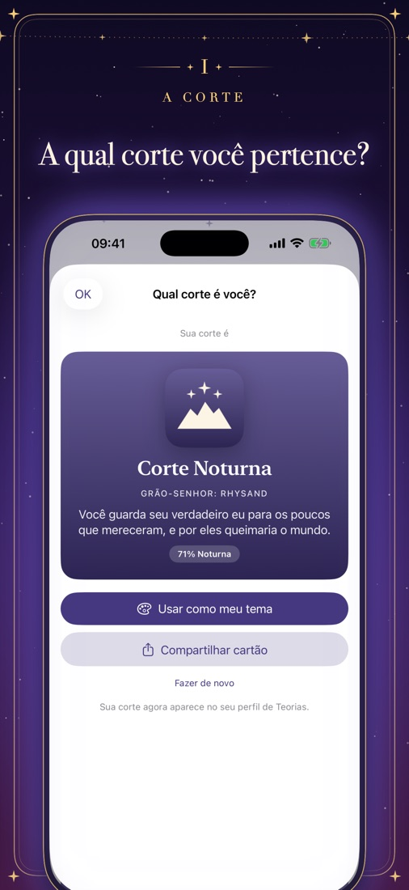
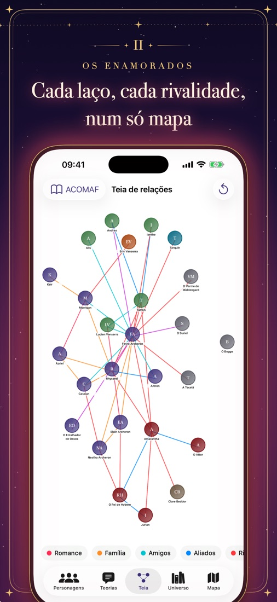
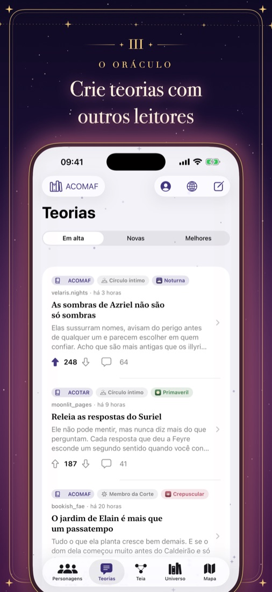
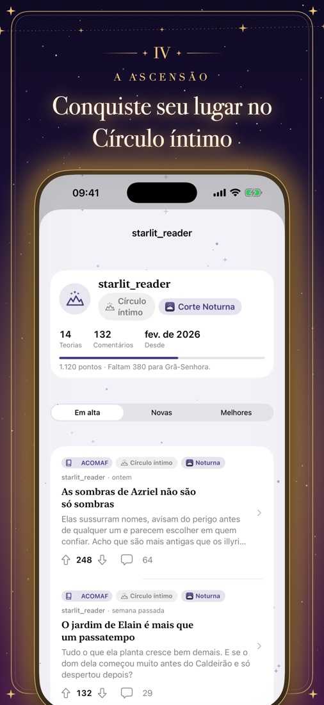
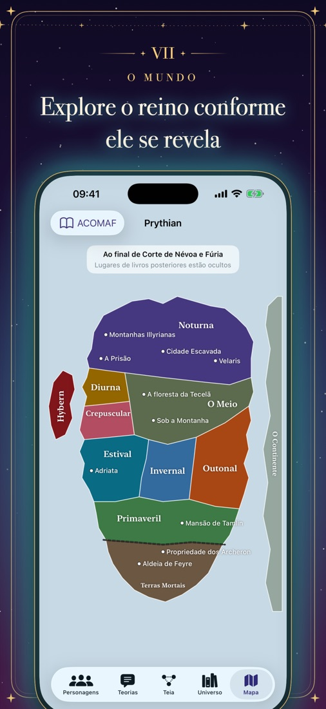
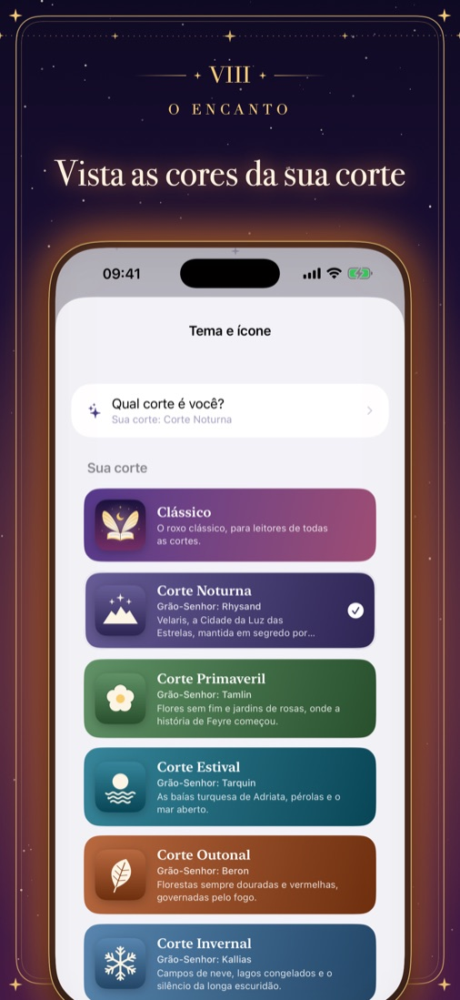
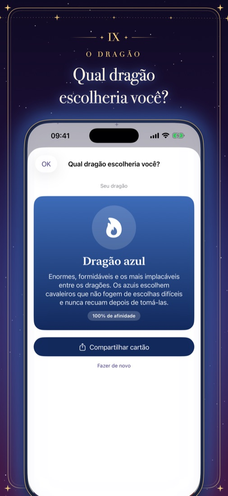

Bem-vindas, garotas do shadow daddy.
Um lugar para compartilhar sua nova obsessão, sem spoilers. A Romantapedia reúne três séries de romantasia: cortes feéricas, cavaleiros de dragão e luas caídas. Descubra a qual corte você pertence ou qual dragão escolheria você, acompanhe cada romance e rivalidade e troque teorias com outros leitores, tudo parando na página em que você está.
Em breve na App Store






Descubra sua corte, ou seu dragão
Oito perguntas decidem a qual corte você pertence ou qual dragão escolheria você. Depois, vista o app com as cores e o ícone da sua corte.
Todos os laços, num mapa
Uma teia viva de amantes, rivais, família e aliados que cresce conforme você lê.
Teorias com leitores
Publique teorias, comente e vote. Cada post indica até qual livro ele dá spoiler.
Suba de patente
Boas teorias rendem pontos, de Humano até Grão-Senhor ou Grã-Senhora.
Sem spoilers, de verdade
Guarde na sua estante todas as séries que você lê e diga ao app em qual livro está em cada uma. Personagens, lore, a linha do tempo e o mapa nunca leem à sua frente.
Em oito idiomas
English, Deutsch, Español, Italiano, 日本語, Nederlands, Português e 简体中文.